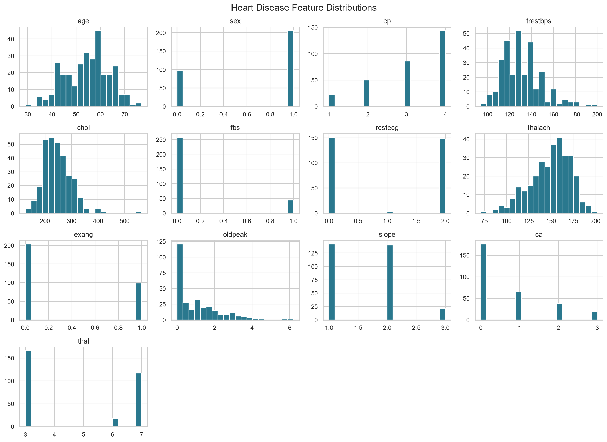
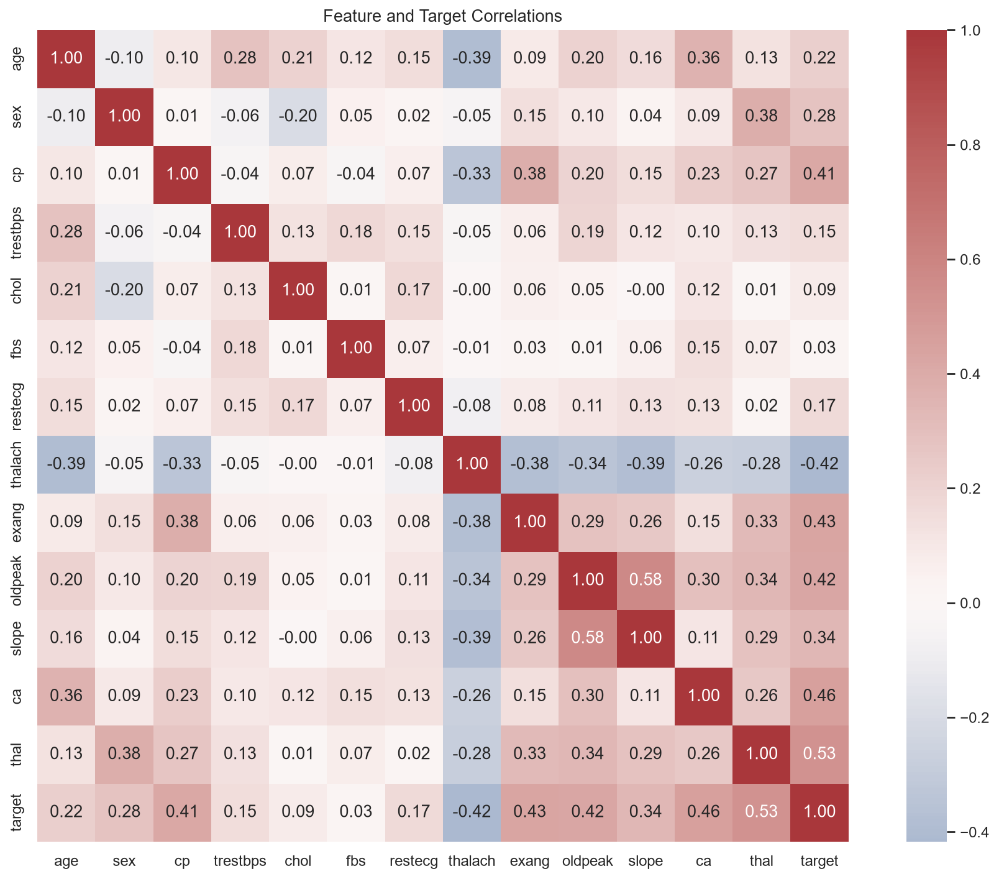
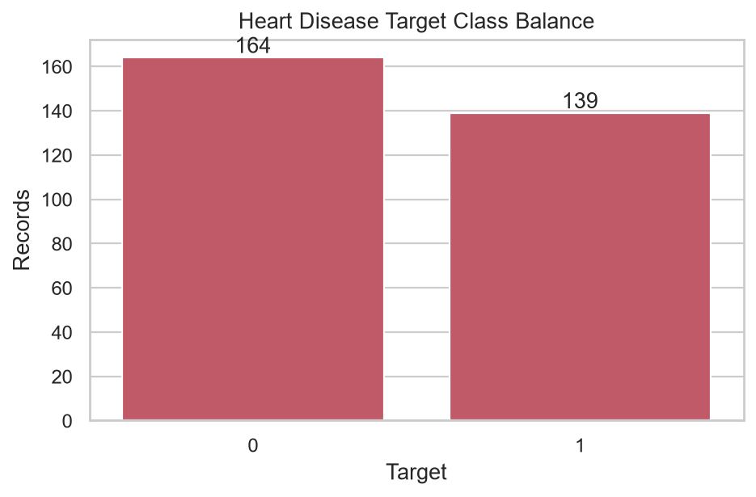
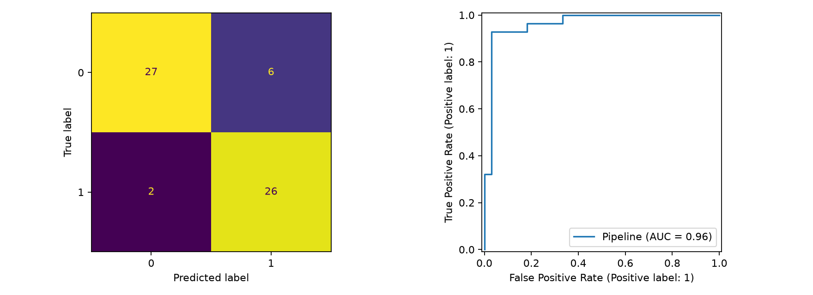
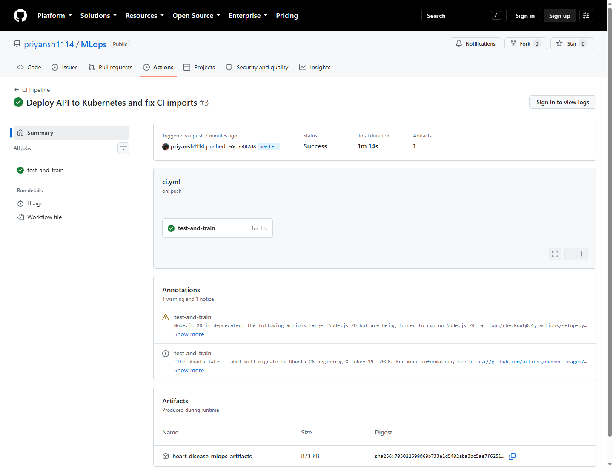
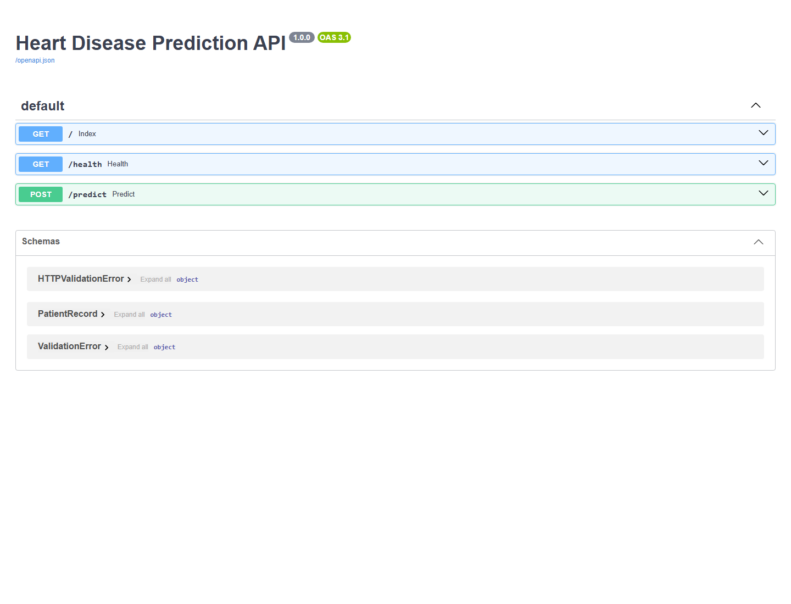
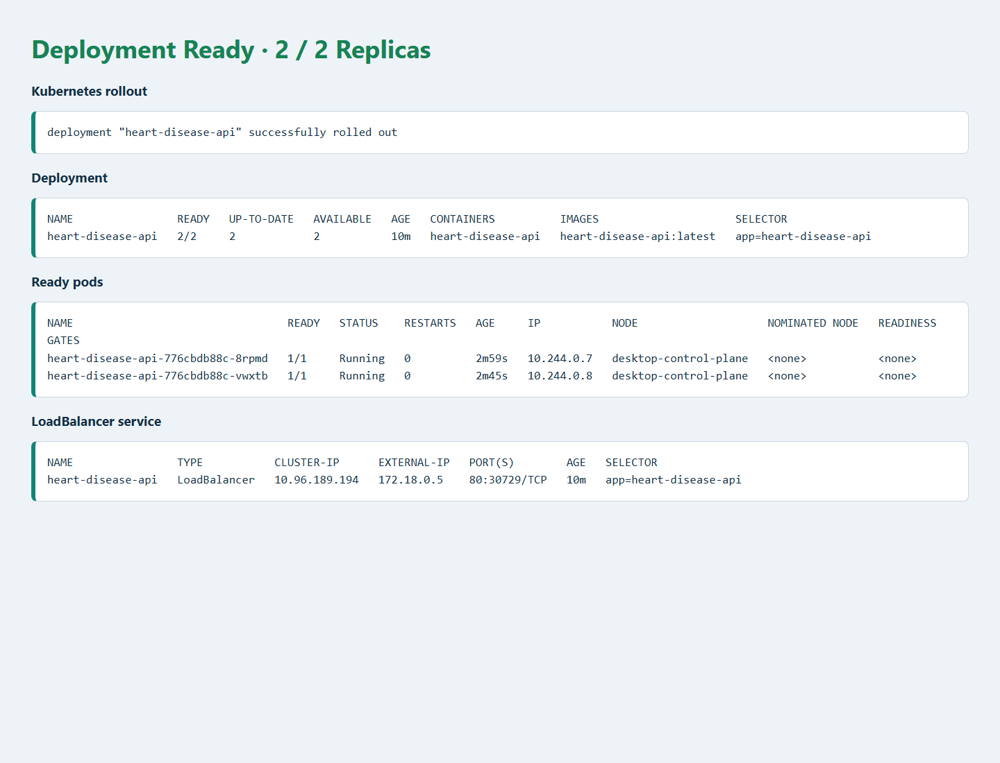

Reproducible model development, experiment tracking, API delivery and operational evidence
This submission implements a complete heart-disease classification workflow: data acquisition and EDA, leakage-aware preprocessing, model comparison and MLflow tracking, a packaged scikit-learn pipeline, a tested FastAPI service, CI automation, Docker packaging, Kubernetes deployment manifests, request logging and Prometheus metrics.
The selected Logistic Regression model achieved mean five-fold cross-validation ROC-AUC 0.9082. Its held-out ROC-AUC was 0.9632 on the fixed stratified split. Docker build, two-replica Docker Desktop Kubernetes rollout, live API checks and five local tests were executed on 2 October 2026; deployment evidence is included in this report.
Project: priyansh1114/MLops · Run environment: Windows, Docker Desktop Linux engine · Report date: 2 October 2026
The project uses the processed Cleveland subset of the UCI Heart Disease dataset. src/heart_disease_mlop/data_pipeline.py downloads the UCI source file when the local snapshot is absent; the checked-in data/heart.csv makes routine runs independent of network access. Original target values 1–4 map to disease-present class 1; value 0 remains class 0.
Question marks are parsed as missing values. Four missing ca values and two missing thal values are preserved for training-only imputation. This avoids leakage from computing imputation statistics on the held-out partition. Feature histograms, feature/target correlations and the class balance chart are generated by the EDA command.



Generated EDA summary: artifacts/eda/summary.json. Source: UCI processed Cleveland data.
The input schema is fixed in FEATURE_COLUMNS. Continuous-valued measurements use median imputation followed by standardization. Categorical attributes use most-frequent imputation followed by one-hot encoding with unknown-category tolerance. The complete fitted preprocessing-and-estimator pipeline is serialized together, so serving uses the same learned transformations as training.
| Feature group | Columns | Training transformation |
|---|---|---|
| Continuous / measured | age, trestbps, chol, fbs, thalach, exang, oldpeak, ca | Median imputation; standard scaling |
| Coded categories | sex, cp, restecg, slope, thal | Most-frequent imputation; one-hot encoding |
| Target | target | 0 = no disease; original 1–4 mapped to 1 |
python -m pip install -r requirements.txt python -m src.heart_disease_mlop.eda python -m src.heart_disease_mlop.train_model uvicorn api.main:app --host 127.0.0.1 --port 8000
artifacts/best_model.joblib holds the selected complete pipeline; per-model artifacts, evaluation tables and plots are also retained. The fixed random seed, stratified holdout and stratified five-fold CV make the experiment repeatable within the dependency environment.
The dataset was split 80/20 with stratification and random seed 42. Grid search ran only on the training partition; mean CV ROC-AUC selected the final model. Accuracy, precision, recall and ROC-AUC were recorded for both CV and the independent holdout partition.
| Model / best parameters | CV ROC-AUC mean ± SD | CV accuracy | CV precision | CV recall | Holdout accuracy | Holdout precision | Holdout recall | Holdout ROC-AUC |
|---|---|---|---|---|---|---|---|---|
Logistic RegressionC=0.1 | 0.9082 ± 0.0199 | 0.8386 | 0.8506 | 0.7921 | 0.8689 | 0.8125 | 0.9286 | 0.9632 |
Random Forestdepth=None, leaf=2, trees=100 | 0.9001 ± 0.0217 | 0.8181 | 0.8186 | 0.7826 | 0.8689 | 0.8125 | 0.9286 | 0.9448 |
Logistic Regression is selected because it has the higher mean cross-validated ROC-AUC. The holdout metrics are descriptive for this small split; they are not used to choose hyperparameters. Both models use class weighting. The tested Logistic Regression grid was C = 0.1, 1, 10; Random Forest grid searched 100/200 trees, unlimited/depth-6 trees and leaf sizes 1/2.

Full grid results and selected parameters: artifacts/evaluation/ and artifacts/training_summary.json. No external validation cohort, calibration analysis or subgroup fairness results are claimed.
Training creates the local MLflow experiment heart_disease_prediction. A parent run records the selected model; nested runs compare Logistic Regression and Random Forest. Parameters, CV metric means and standard deviations, holdout metrics, model artifacts, search tables and diagnostic plots are logged per model.
| Tracked item | Recorded evidence | Repository artifact |
|---|---|---|
| Parameters | Model type, split seed/size, fold count, best grid parameters, selection metric | mlruns/ |
| Metrics | CV mean and standard deviation; holdout accuracy, precision, recall, F1 and ROC-AUC | artifacts/training_summary.json |
| Models | Fitted preprocessing + estimator pipelines | artifacts/best_model.joblib, per-model joblib files |
| Plots and tables | Grid-search rows, confusion matrix and ROC curve | artifacts/evaluation/ |
The local tracking URI points to the repository's mlruns/ store. Inspect runs with:
$env:MLFLOW_ALLOW_FILE_STORE = "true" mlflow ui --backend-store-uri .\mlruns --host 127.0.0.1 --port 5000
The Docker image includes the saved final model and loads it at service startup. If that artifact is absent during a development run, the API can train a replacement from the local dataset. For production, pin and version the model together with a dependency lock, dataset checksum and MLflow run ID.
| Route | Purpose | Verification |
|---|---|---|
GET /health | Process and model readiness | HTTP 200; model_loaded=true |
POST /predict | 13-feature validated patient payload | Prediction, class-1 probability and predicted-class confidence |
GET /metrics | Prometheus counters and latency histogram | HTTP 200; request metrics observed |
GET /docs | Interactive OpenAPI / Swagger documentation | Live browser evidence on page 8 |
POST /predict
Content-Type: application/json
{"age":52,"sex":1,"cp":0,"trestbps":125,"chol":212,
"fbs":0,"restecg":1,"thalach":168,"exang":0,"oldpeak":1.0,
"slope":2,"ca":2,"thal":2}
The response shape is {"prediction":1,"probability":0.7242,"confidence":0.7242} for this test request in the built container. The response rounds probability fields to four decimals. Pydantic constrains coded categories and rejects negative values; requests do not include raw feature values in logs.
docker run --name heart-disease-api-local -p 8000:8000 heart-disease-api:latest curl http://127.0.0.1:8000/health curl http://127.0.0.1:8000/docs
The screenshot evidence folder contains a captured Swagger page, readiness JSON and Prometheus metrics response from the running Docker service. The live service is currently published on localhost port 8000.
.github/workflows/ci.yml runs on pushes and pull requests to main and master. It installs the requirements, runs Ruff, runs pytest, trains both model families, generates EDA outputs and uploads artifacts even if an earlier job step fails.
| Check | Result | Scope |
|---|---|---|
python -m pytest -q | PASS · 5 passed | API health, prediction, metrics and data/preprocessor tests |
python -m ruff check --select E4,E7,E9,F src api tests | PASS · All checks passed | Source, API and tests |
| Docker image build | PASS · image built | heart-disease-api:latest |
| Docker health / prediction / metrics | PASS · HTTP 200 | Running container on localhost:8000 |
| GitHub Actions run #3 | PASS · all steps | Workflow run · download artifact |

The pytest run emitted one Starlette/httpx deprecation warning; it did not fail tests. The previous hosted run failed during test collection because Python could not import the project packages; pytest.ini adds the project root and src to the import path.
python -m pytest -q. Hosted run #3 uploaded the heart-disease-mlops-artifacts bundle (retained until 16 October 2026).The Docker image was built successfully from the repository's Python 3.12 slim base image using the declared requirements. Docker Desktop's Linux engine is running; the container remains up and is published on port 8000.
| Build / runtime evidence | Observed result |
|---|---|
| Image tag | heart-disease-api:latest |
| Image ID | sha256:91ad6ca68e286581a95a3bb3aba233d26e6096ae1fb5db3c4aa3bd2f336eef65 |
| Container name / status | heart-disease-api-local · Up, host 0.0.0.0:8000 → container 8000 |
/health | {"status":"ok","model_loaded":true} |
Sample /predict | HTTP 200 · prediction 1 · probability 0.7242 · confidence 0.7242 |
/metrics | HTTP 200 · request counter and duration histogram exposed |

screenshots/.Evidence date: 2 October 2026. Build context excludes the local virtual environment, Git data, MLflow run store and caches via .dockerignore.
FastAPI middleware counts requests by method, route and status, observes request duration and emits structured access logs containing route, status and duration—not patient feature values. The Prometheus /metrics endpoint exposes counters and histograms. A Prometheus scrape configuration is provided in monitoring/prometheus.yml; Kubernetes manifests define a two-replica deployment, health probes, scrape annotations and a LoadBalancer service.
heart_disease_api_requests_total{method="GET",route="/health",status="200"} 1.0
heart_disease_api_requests_total{method="POST",route="/predict",status="200"} 1.0
heart_disease_api_requests_total{method="GET",route="/metrics",status="200"} 1.0
| Target | Status | Evidence / blocker |
|---|---|---|
| Local Docker API | DEPLOYED & tested | Container running; health, predict, metrics verified; screenshots saved |
| Docker Desktop Kubernetes | DEPLOYED · 2/2 READY | Successful rollout; health and sample prediction verified through port-forward |
| Public cloud URL | NOT CLAIMED | No cloud credentials or public host configured |
| Prometheus server / Grafana | CONFIG PROVIDED | API metrics endpoint works; no separate Prometheus/Grafana server was launched |
The Docker Desktop Kubernetes rollout reached two ready replicas. Its containerd image store is separate from Docker's local image store, so the built image was explicitly imported and the manifest uses imagePullPolicy: Never. The service was tested through kubectl port-forward service/heart-disease-api 8080:80. No public deployment URL is claimed. The scrape target in the Prometheus config is cluster DNS and must be changed for an external local Prometheus instance.

screenshots/.pytest.ini; the corrected workflow run is pending.| Assignment area | Coverage | Repository artifact / evidence |
|---|---|---|
| 1. Data acquisition & EDA | Implemented | Download-on-missing, data snapshot, histograms, heatmap, balance and summary |
| 2. Feature engineering & modeling | Implemented | Leakage-aware preprocessing, two grid-searched models, five-fold CV and metrics |
| 3. Experiment tracking | Implemented | Nested MLflow runs with parameters, metrics, artifacts and plots |
| 4. Packaging & reproducibility | Implemented | Serialized full pipeline, requirements, inference command |
| 5. CI/CD & testing | Workflow fixed / pending hosted rerun | GitHub Actions, Ruff, 5 pytest tests; pytest.ini fixes CI imports |
| 6. Model containerization | Built, started & verified | Dockerfile, live API and captured screenshots |
| 7. Production deployment | Local Kubernetes deployed | Two ready replicas; Service and API verified; no public cloud URL |
| 8. Monitoring & logging | API endpoint verified | Request logs and Prometheus metrics; external dashboard not launched |
| 9. Documentation & reporting | PDF + Markdown | This 10-page PDF, report.md, README, EDA and API evidence |
Key deliverables: source in src/ and api/; data and EDA/model artifacts under data/ and artifacts/; tests in tests/ with pytest.ini; CI at .github/workflows/ci.yml; Dockerfile, k8s/deployment.yaml and scripts/load_docker_desktop_image.ps1; evidence in screenshots/.